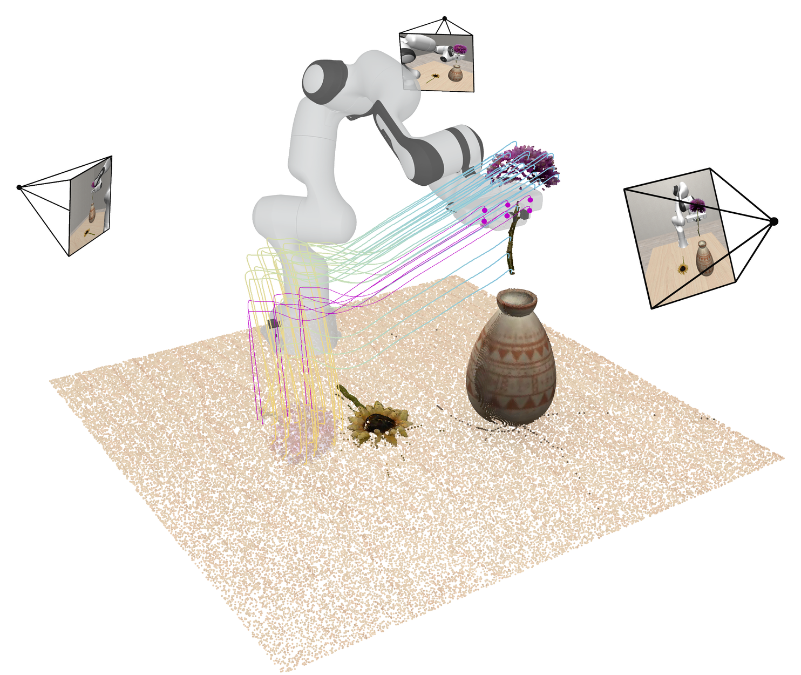

一句话理解
UNITAS 认为 WAM 的关键接口应该是“物理空间中的交互”，而不是“像素空间中的未来帧”。同一 window 中，camera、robot/human motion 和 scene response 都使用固定 metric frame。
图像 → 点流 → 动作/后果
calibration
visual tokens
scene flow
action chunk
为什么要 3D-native？
同一物理位移在不同相机下产生不同 pixel displacement；相同 pixel displacement 也不代表相同 metric distance。UNITAS 把相机、机器人、场景点统一到 world frame。
为什么是 point flow？
机器人每臂 20 个 URDF gripper points，人手 21 个 MANO keypoints；每个点的完整 physical-time trajectory 被压成一个 token，并保持 point identity。
Policy mode
只执行 action expert 的 end-effector action chunk，适合低延迟控制；不生成 future action-flow 和 scene-flow。
World-model mode
action flow 与 action chunk 并行 denoise，scene flow 以 action flow 为条件；scene query 越多，空间覆盖越高，latency 也越大。
论文图：共享 metric frame

嵌入图像：多视角观察、夹爪点轨迹与场景点流在共享坐标中的示意。
方法拆解
multi-view
calibration
visual tokens
expert
+ scene flow
Point dynamics expert：28 layers / width 1280 / 20 heads；Action expert：28 layers / width 640 / 10 heads。总参数 1,694.5M。
有 depth 时
像素通过 K 和 depth 反投影到 camera frame，再由 T⁽W⁾ 映射到 world frame；world position 的 Fourier features 加到视觉 token。
公式：Pcamera = D K⁻¹[u,v,1]ᵀ；Pworld = Tcamera→world Pcamera。
无 depth 时
沿 camera ray 采样 64 个候选深度（0.1–2.0 m），用 patch feature 计算 routing 权重，再聚合 world-frame positional feature。
LIBERO-Plus：routed PE 无 depth 84.43%，ground-truth depth PE 84.68%。
三种 flow 的职责
| 变量 | 预测对象 | 条件与作用 |
|---|---|---|
| A：action flow | 夹爪/人手点轨迹 | 共享 metric frame；提供动作的几何中间表示 |
| u：action chunk | 可执行 EEF translation/rotation/gripper | action expert 直接输出；policy mode 只保留这一支 |
| S：scene flow | 环境点位移 | 条件于 clean/generated action flow，表达动作后果 |
训练与推理设置
| 项目 | 论文设置 |
|---|---|
| 数据 | RoboTwin、LIBERO、VLABench、DROID、AgiBot、RoboMIND、RH20T、VITRA、W1 |
| 训练 | 200K steps；batch 1,024；AdamW；experts lr 1e−4，VLM lr 1e−5 |
| 时间 | Tmax = 3 s；不同数据源按 physical time 采样 |
| 推理 | 10 Euler steps；action-only / action+flow / action+both-flow |
Policy mode 的 benchmark 结果
以下均为论文表 1 的 policy success；不同 benchmark 的任务、控制接口和评测协议不同，不应合成单一总分。
Real-world 20-trial comparison
| Task | π0.5 | Fast-WAM | UNITAS |
|---|---|---|---|
| Organize Books | 75% | 65% | 90% |
| Pack the Ball | 55% | 60% | 80% |
每个方法每个任务 20 trials。注：引言一句误写 Pack the Ball 为 65%；摘要、§4.3 正文与表 2 均为 80%，本页按表 2 展示。
动作/场景预测
| 指标 | PointWorld | UNITAS |
|---|---|---|
| Moving ADE ↓ | 0.656 cm | 0.427 cm |
| Static ADE ↓ | 0.084 cm | 0.043 cm |
| Moving FDE ↓ | 1.050 cm | 0.825 cm |
| Moving Acc@1cm ↑ | 88.22% | 92.31% |
Latency explorer
选择论文实际报告的输出模式。场景 query 数量只影响 world-model mode。
只生成 executable action chunk；future point flows 被跳过。
关键消融
这些是无 mixed-dataset pretraining 的 LIBERO-Plus ablation，不是表 1 的 full UNITAS overall。
论文证明了什么
- 共享 metric 3D frame 可以同时支持 action learning 和 scene prediction。
- world-aligned 3D PE 对 viewpoint/initial-state robustness 有帮助。
- action flow、history 和 scene-flow supervision 都能影响 LIBERO-Plus robustness。
- policy mode 与 world-model mode 可以在同一架构中解耦。
论文没有证明什么
- 没有证明所有长时程 scene dynamics 都能准确预测。
- 没有给出真实世界 scene-flow 的定量 ground truth 评测。
- 55.77 ms 是 action-only/chunk latency，不是完整机器人系统 FPS。
- 两个真实任务不足以代表通用 real-world manipulation。
快速自测
为什么 UNITAS 不等于“带深度的 VLA”？
深度只是 world-aligned embedding 的一种输入来源；核心是 action、scene 和 observation 在 metric frame 中共享 point-flow interface。
为什么 scene-flow mode 会变慢？
scene query 数决定需要预测的空间点数量。1,024 queries 为 305.49 ms，3,000 queries 为 561.60 ms。
为什么 action flow 和 action chunk 要分开？
action flow 是跨 embodiment 的几何 motion representation；action chunk 是当前机器人可以直接执行的 EEF command。两者共享 context，但承担不同职责。
最值得迁移的工程原则是什么？
先固定坐标系、点身份、physical-time 采样和 query budget，再讨论模型大小；否则不同数据源的“动作”并不在同一个物理语言里。
配套资料
同目录包含完整 summary、method、insights、mental-model、reflection、15 道 QA，以及 code/world_aligned_point_flow_demo.py。教学 demo 是可运行概念代理，不调用官方 checkpoint。